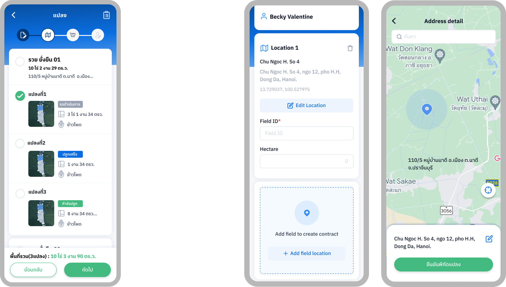
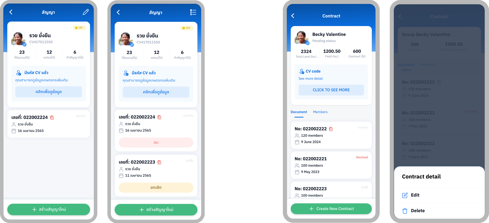
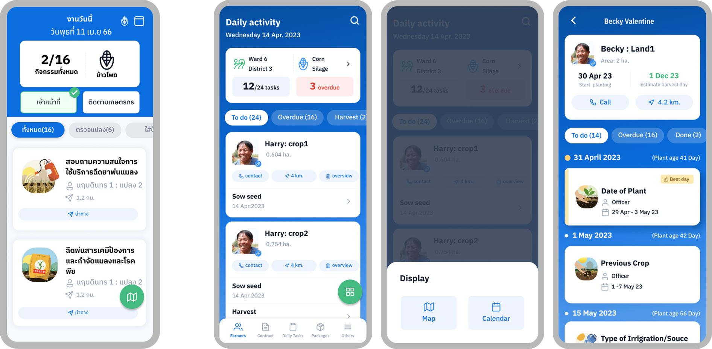

Test
Usability test planning: In our initial usability test, we chose these two features for testing and structured our interview process accordingly.
Contract farming
Daily activities
Usability testing: After conducting a usability test with 40 users, we gathered data and categorized the results into two distinct types of analyses: qualitative and quantitative. Additionally, we assessed the System Usability Scale (SUS) scores for each task.
Raw findings
Test summary

Revision
Contract farming : Revision1
Contract farming : Revision2
Daily activities : Revision1
Pre-Launch : Prior to the app launch, we initiated a 'Training Super User' program, engaging users from each center. This session focused on instructing users on app usage, allowing them to explore its features, and gathering final feedback before the official app store launch
C-sat score : During the Super User training, I implemented a Google Form to collect satisfaction feedback for each feature from a total of 58 users. Participants were encouraged to suggest improvements and identify flaws in each feature, rating their satisfaction on a scale from 5 (very satisfied) to 1 (not satisfied at all). The numbers below represent the average satisfaction score for each section.
For Future Development
Google analytic : We collaborate across UX/UI, Product Ownership, Development, Data Privacy, and Business Intelligence to implement Google Analytics. This allows us to gather insights, seek feedback, and gain a comprehensive understanding of user interactions with the application in their daily lives.